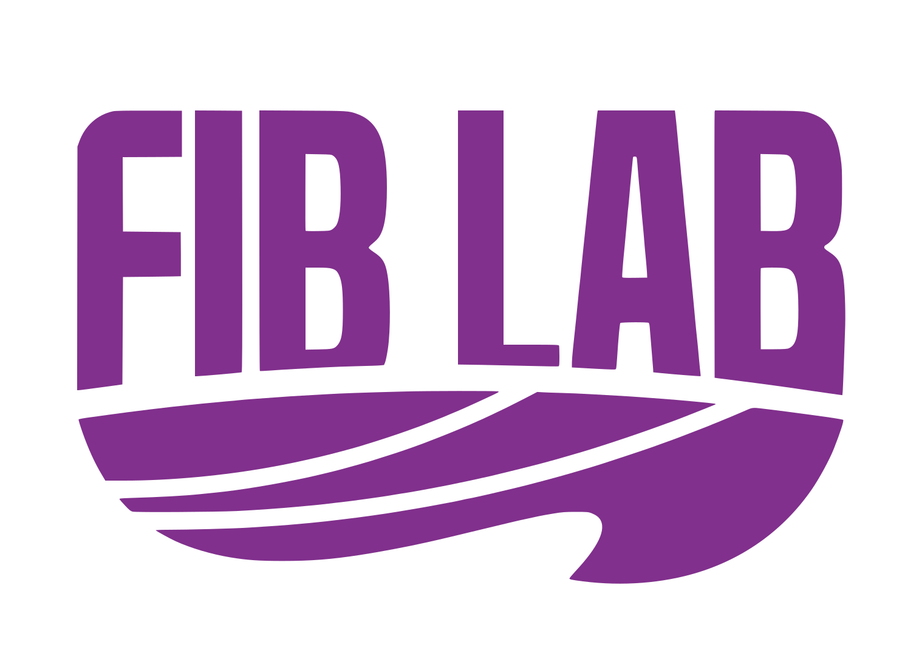
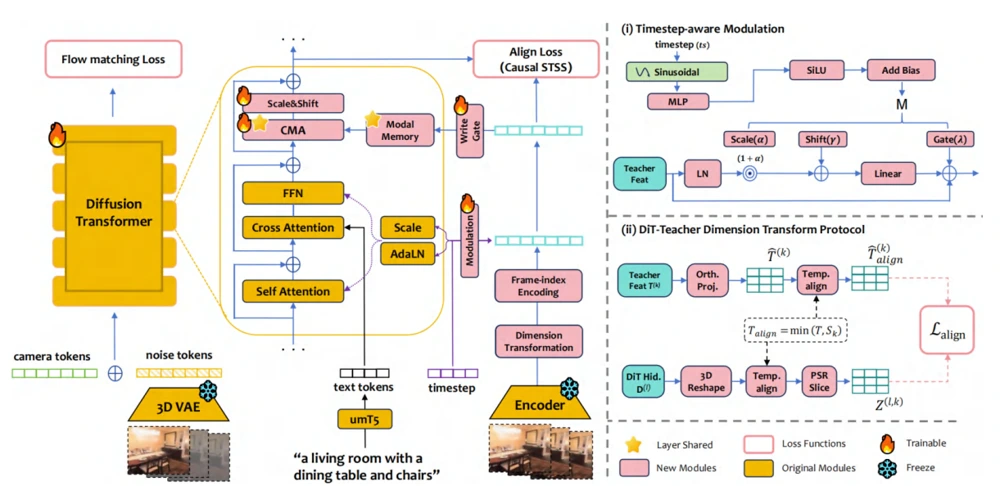
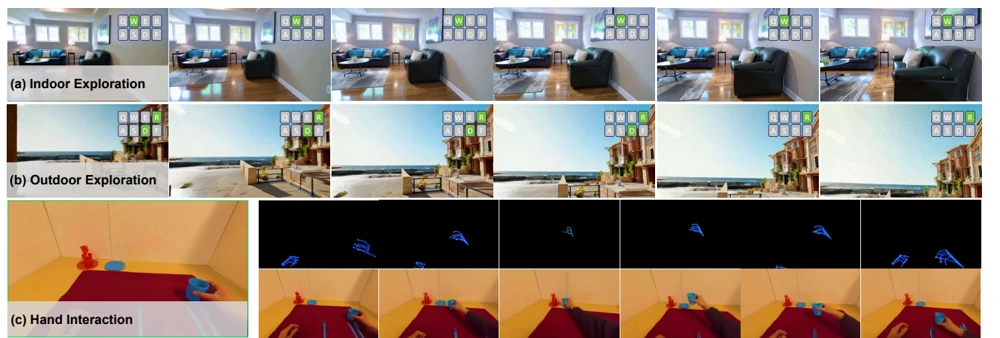
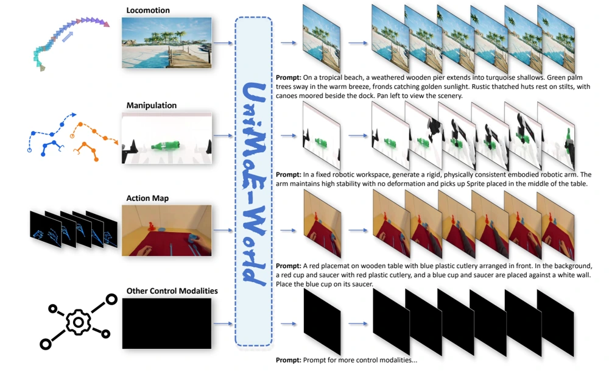
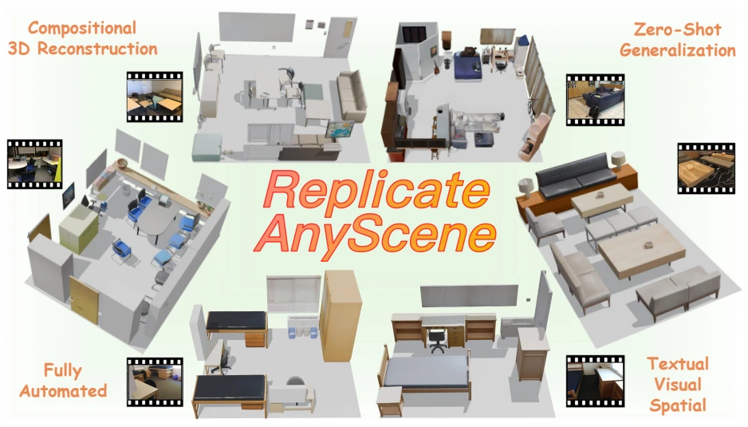
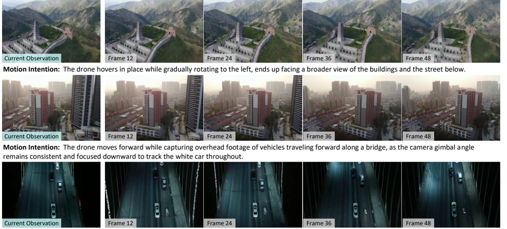

2023.09 — 至今
清华大学
自动化系 · 本科
智能机器人英才班。排名前 20%。
我是清华大学自动化系本科生。我的研究兴趣包括具身系统中的世界模型、机器人与表征学习。
我的研究围绕两条相互关联的主线展开。在模型层面，我希望通过表征学习改进视觉世界状态建模：建立世界状态与动作之间的联系，保持时空一致性，并发展更丰富的表征能力，以支持理解与交互。
在智能体层面，我关注系统的适应能力，尤其是机器人系统。我将上下文学习（ICL）、测试时训练（TTT）、持续学习与终身学习，以及 RSI，视为适应能力的不同体现形式。我的长期目标是将这两条主线结合，构建能够适应环境与任务变化、并随经验积累而调整的智能机器人系统。
我曾在 FIBLAB 跟随李勇教授开展研究，也曾在清华大学空间智能与视觉研究组跟随段岳奇教授开展研究。目前在 Shanghai Coco Matrix Intelligent Technology 担任研发实习生，参与机器人模型预训练。
加入 Shanghai Coco Matrix Intelligent Technology，担任研发实习生，参与机器人模型预训练。
开始在清华大学空间智能与视觉研究组跟随段岳奇教授开展研究。
加入 Manifold AI，担任研发实习生，参与 WorldScape 研究。
AirScape 发表于 ACM Multimedia 2025，BNI 赛道口头报告。
面向具身系统的动作条件生成、空间一致性与长时记忆。
将视觉模型与感知、操作及真实世界交互相结合。
从多源信息中学习互补的几何与语义知识。
自动化系 · 本科
智能机器人英才班。排名前 20%。
清华大学 · 导师：段岳奇教授
组合式三维场景重建与评测。

清华大学 · 导师：李勇教授
可控世界模型与空间一致性视频生成。
研发实习生 · 导师：Yuxiang Gao
机器人模型预训练团队核心成员之一。
研发实习生 · 导师：Chen Gao、Wei Wu
WorldScape 的主要贡献者，负责三维空间一致性训练与面向记忆的 KV 缓存优化。
* 表示同等贡献。





No selected publications yet.